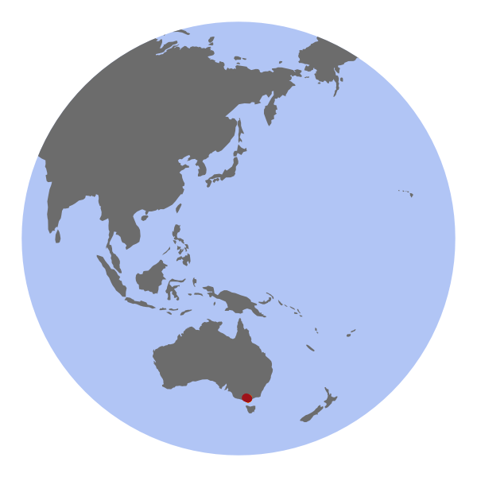
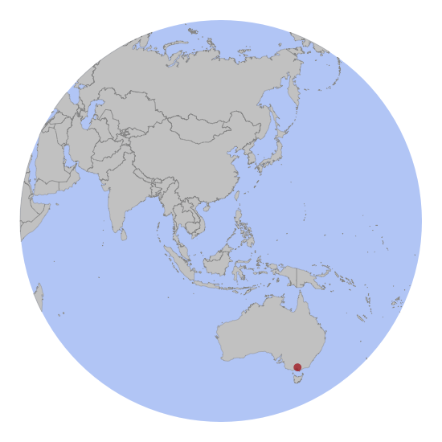

Migration pattern of Curlew sandpipers and Red-necked stints

Breeding sites
Figure 1: Estimated breeding sites of tracked Curlew sandpipers (left) and Red-necked stints (right). The colored areas indicate the breeding range derived from BirdLife. The rectangles are breeding sites during the Arctic summer in 2018 and circles are estaimted sites during 2019.
Migration routes
Northward migration

Southward migration

Stoppover sites (preliminary)
The maps show the stopover sites of Curlew sandpipers (left) and Red-necked stints (right) for both migratory seasons. Each dot represents a cluster of stopover sites, meaning that individual stopover sites are merged together. The size of the circles represent the sum of the time the individuals spent in the cluster.
The odd Curlews
Two Curlew sandpipers showed remarkable migrations. BQ877 (KAP) is the first tracked shorebrid from the EAAF migrating west of the Himalayas during southward migration. BJ573 (DKH) remained in Burma for the non-breeding season 2019 before migrating back north to the breeding site. On the way south, the logger stopped in the tropics but the bird has be recaptured on the deployment site in 2020.
BQ877

BJ573
Acknowledgements
As always, this project was made possible by the many enthusiastic members of the Victorian Wader Study Group.
The report was compiled by:
Simeon Lisovski1,2, Ken Gosbell2 and Marcel Klaassen2,3
1 Alfred-Wegener-Institute Helmholz Centre for Marine and Polar Research, Potsdam, Germany. 2 Victorian Wader Study Group, Australia. 3 Deakin University, Centre for Integrative Ecology, Geelong, Australia.